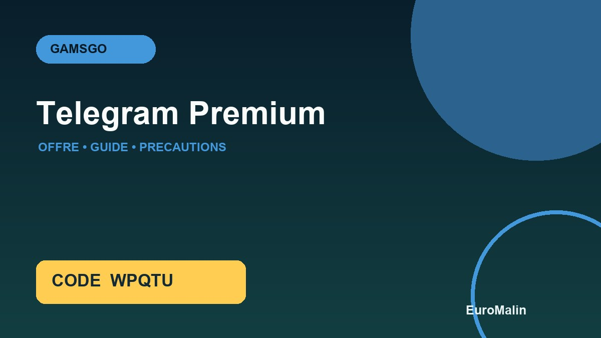

WPQTUOpen GamsGo with the partner link, enter the code if the basket offers it and check the discount actually displayed for Telegram Premium.
Telegram Premium offer spotted on GamsGo
Telegram Premium was included in the GamsGo public catalogue during our inspection. EuroMalin did not yet have a dedicated guide: this page therefore completes the file without presenting a temporary price as a permanent promise.
The offer may interest people who want to unlock Telegram's Premium features. Depending on the selected card, GamsGo can offer a key, invitation, license or pre-activated account depending on the offer displayed. This detail changes the level of control, confidentiality and simplicity of renewal.
What to check before ordering
- Type and duration of license.
- Compatible devices and region.
- Retrieving the account or key.
- The mode of activation and the absence of a login code request to your account.
- The total price, the fees and the currency in the basket.
- The seller's note, delivery time and protection indicated.
Account, invitation, key or reload: do not confuse them
An account provided by a seller does not give the same control as an active subscription on your own account. An invitation may be withdrawn by the administrator. A key may depend on a region or version. A personal charge is usually easier to keep your settings, but sometimes it requires a specific ID or procedure.
Read the delivery section before payment. Never use a password already used elsewhere and do not communicate any dual authentication code unless the official procedure, clearly described in the order, requires it and you understand exactly the access granted.
How to properly compare Telegram Premium offer
- Open the catalogue with the partner link EuroMalin.
- Look for Telegram Premium and compare equivalent formulas.
- Check the type of access, region, duration and warranty.
- Enter
WPQTUin the promotional field if available. - Compare the final total to the official offer, without relying solely on the advertised percentage.
- Keep a record and test the delivery immediately.
The promo code GamsGo WPQTU
EuroMalin partner code is WPQTU. It must remain visible before the validation of the payment, but EuroMalin does not announce a fixed percentage: eligibility may depend on the product, seller, period or customer account. If the basket shows no savings, consider that the code does not apply to this order.
WPQTUOpen GamsGo with the partner link, enter the code if the basket offers it and check the discount actually displayed for Telegram Premium.
Frequently asked questions
Does GamsGo currently offer Telegram Premium?
Telegram Premium appeared in the GamsGo public catalogue controlled on August 20, 2026. Availability, sellers and formulas may change.
How to use WPQTU code for Telegram Premium?
Open GamsGo with the EuroMalin link, choose the Telegram Premium offer, enter WPQTU if a promo field is displayed, then check the total before payment.
Is the displayed price guaranteed?
No. Price varies according to duration, seller, currency, region, type of access and possible fees. Only the total basket at the time of purchase is authentic.
What if access does not match the form?
Keep the card and exchanges, immediately test the delivery and open a request in the order without moving the discussion out of GamsGo.
Sources and date of review
Comparison made on 20 August 2026 from the GamsGo public catalogue in French. Availability and conditions change: always reread the card and basket. The commercial button uses the EuroMalin standard partner link.